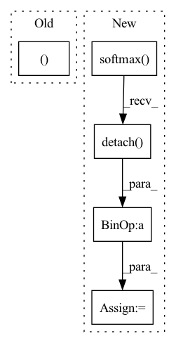

Pattern ID :2440

Before Change
def forward(self, g_s, f_s, g_t, f_t):
trans_loss_s, domain_acc_s = self._single_domain_forward(g_s, f_s, domain=1)
trans_loss_t, domain_acc_t = self._single_domain_forward(g_t, f_t, domain=0)
self.grl.step()
self.domain_discriminator_accuracy = 0.5 * (domain_acc_s + domain_acc_t)
return 0.5 * (trans_loss_s + trans_loss_t)
After Change
def forward(self, g_s, f_s, g_t, f_t):
f = torch.cat((f_s, f_t), dim=0)
g = torch.cat((g_s, g_t), dim=0)
g = F.softmax(g,dim=1).detach()
h = self.grl(self.map(f, g))
d = self.domain_discriminator(h)
d_label = torch.cat((
torch.ones((g_s.size(0), 1)).to(g_s.device),
torch.zeros((g_t.size(0), 1)).to(g_t.device),
))
weight = 1.0 + torch.exp(-entropy(g))
batch_size = f.size(0)
weight = weight / torch.sum(weight) * batch_size
self.domain_discriminator_accuracy = binary_accuracy(d, d_label)
return self.bce(d, d_label, weight.view_as(d))
In pattern: SUPERPATTERN
Frequency: 3
Non-data size: 5
Instances
Fragment ID: 14606616
Project Name: thuml/transfer-learning-library
Commit Name: 6dfc8e293ca2cbc4d116dc8ed0a6ef176dff0d06
Time: 2020-04-12
Author: 13126830206@163.com
File Name: dalib/adaptation/cdan.py
M Class Name: ConditionalDomainAdversarialLoss
N Class Name: ConditionalDomainAdversarialLoss
M Method Name: forward(5)
N Method Name: forward(5)
M Parent Class: nn.Module
N Parent Class: nn.Module
M File Name: dalib/adaptation/cdan.py
N File Name: dalib/adaptation/cdan.py
M Start Line: 86
M End Line: 90
N Start Line: 87
N End Line: 100
'>
Before Change
self.domain_discriminator_accuracy = None
def forward(self, g_s, f_s, g_t, f_t):
trans_loss_s, domain_acc_s = self._single_domain_forward(g_s, f_s, domain=1)
trans_loss_t, domain_acc_t = self._single_domain_forward(g_t, f_t, domain=0)
self.grl.step()
self.domain_discriminator_accuracy = 0.5 * (domain_acc_s + domain_acc_t)
After Change
def forward(self, g_s, f_s, g_t, f_t):
f = torch.cat((f_s, f_t), dim=0)
g = torch.cat((g_s, g_t), dim=0)
g = F.softmax(g,dim=1).detach()
h = self.grl(self.map(f, g))
d = self.domain_discriminator(h)
d_label = torch.cat((
torch.ones((g_s.size(0), 1)).to(g_s.device),
torch.zeros((g_t.size(0), 1)).to(g_t.device),
))
weight = 1.0 + torch.exp(-entropy(g))
batch_size = f.size(0)
weight = weight / torch.sum(weight) * batch_size
self.domain_discriminator_accuracy = binary_accuracy(d, d_label)
'>
Fragment ID: 14606612
Project Name: thuml/transfer-learning-library
Commit Name: 8477111b23336e7dd2d349a4b35b969240ff5871
Time: 2020-04-12
Author: 13126830206@163.com
File Name: dalib/adaptation/cdan.py
M Class Name: ConditionalDomainAdversarialLoss
N Class Name: ConditionalDomainAdversarialLoss
M Method Name: forward(5)
N Method Name: forward(5)
M Parent Class: nn.Module
N Parent Class: nn.Module
M File Name: dalib/adaptation/cdan.py
N File Name: dalib/adaptation/cdan.py
M Start Line: 86
M End Line: 90
N Start Line: 87
N End Line: 100
'>
Before Change
quantizeds.append(deTransformed)
codes.append(sample.argmax(-1).permute(1, 0).reshape(n, h, w))
logits.append(logit.reshape(n, h, w, k))
return quantizeds, codes, logits
class VQuantizer(nn.Module):
def __init__(self, k: List[int], cin: int, rate: float = 0.1):
After Change
// logit = prob(x, h, w)
// logit = torch.matmul(x / (x ** 2).sum(-1, keepdim=True), codewords / (codewords ** 2).sum(0, keepdim=True))
logit = x @ codewords
soft = (logit / temperature).softmax(-1)
if hard:
hard = logit.argmax(-1)
hard = F.one_hot(hard, k)
sample = (hard - soft).detach() + soft
else:
sample = soft
// sample = F.gumbel_softmax(logit, temperature, hard)
'>
Fragment ID: 14606593
Project Name: xiaosu-zhu/mcquic
Commit Name: 96e69f8763c2cf2c9cf0695159db17ddf4e0c857
Time: 2021-02-15
Author: xiaosu.zhu@outlook.com
File Name: src/mcqc/models/quantizer.py
M Class Name: TransformerQuantizer
N Class Name: TransformerQuantizer
M Method Name: forward(4)
N Method Name: forward(4)
M Parent Class: nn.Module
N Parent Class: nn.Module
M File Name: src/mcqc/models/quantizer.py
N File Name: src/mcqc/models/quantizer.py
M Start Line: 280
M End Line: 335
N Start Line: 280
N End Line: 339